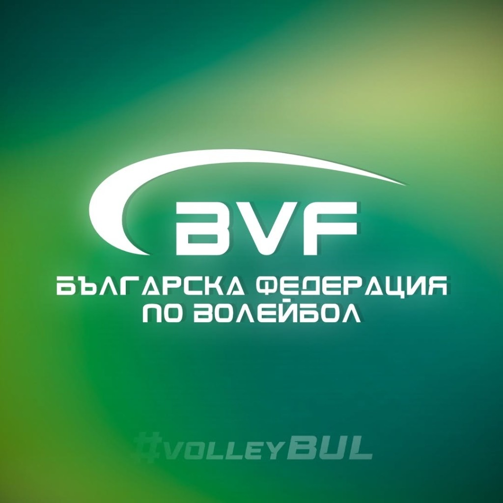
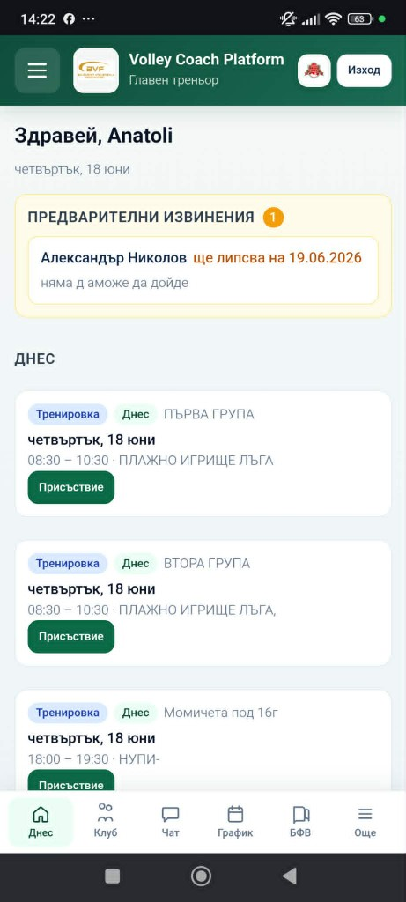
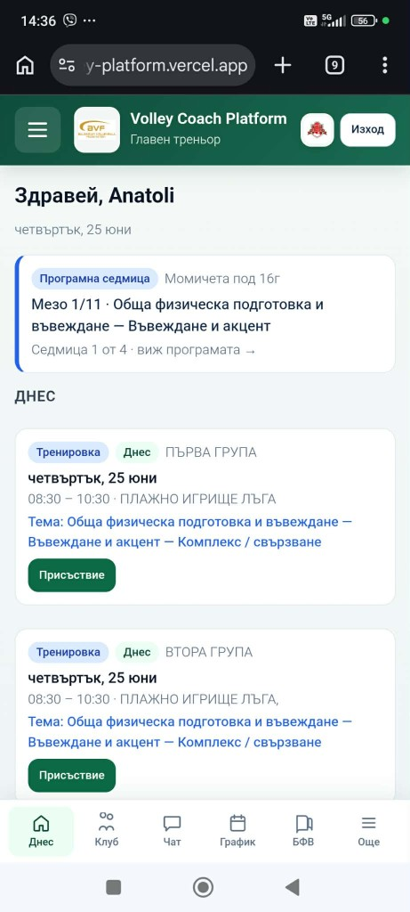
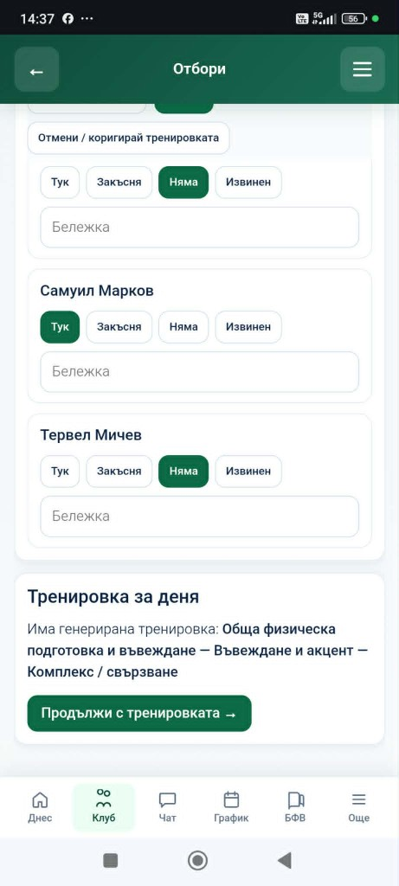
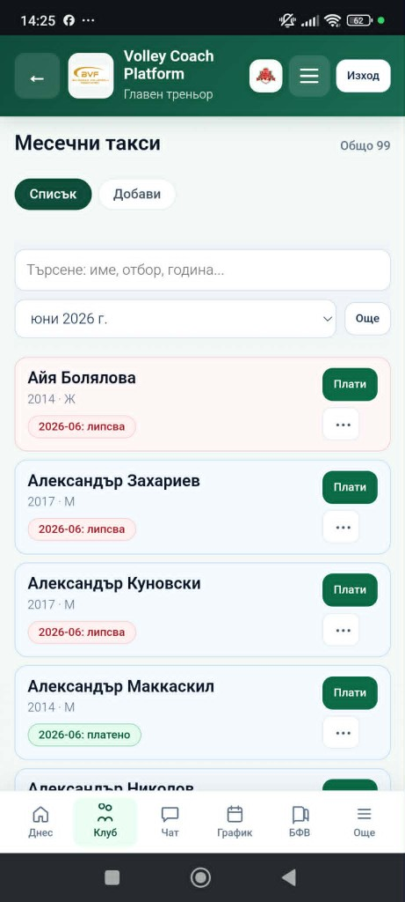
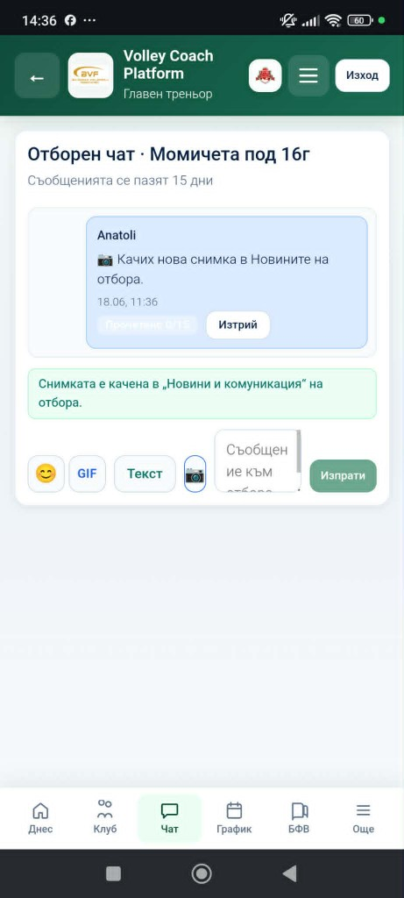
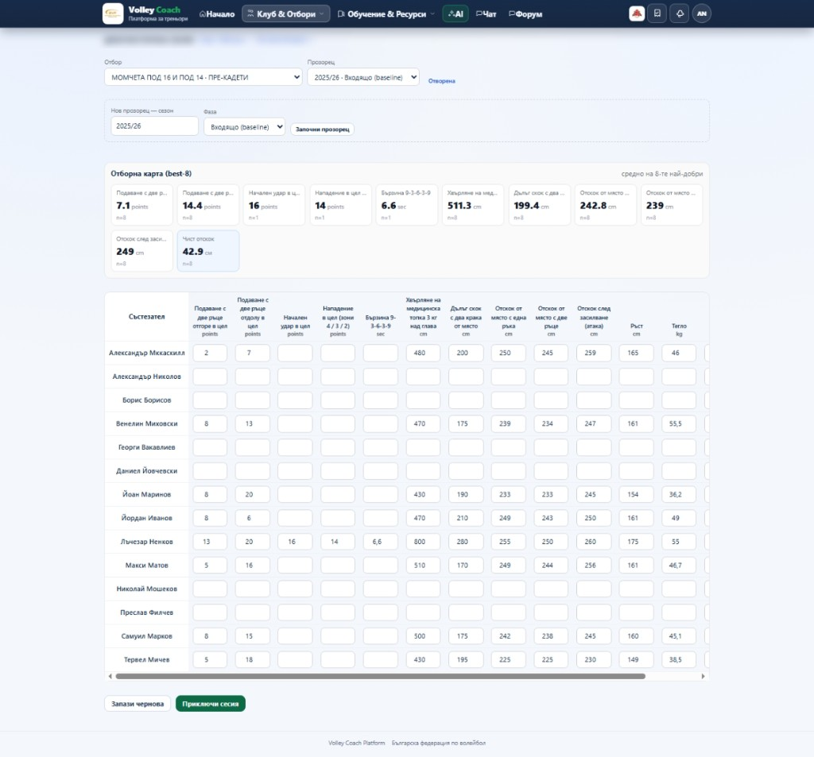

Инструкция за треньори
Кратко и практично ръководство как да ползвате платформата в ежедневието — от телефона в залата. Всичко е на едно място: присъствие, тренировки по методиката на БФВ, график, такси и комуникация с родителите.
Вход в платформата
Влизате с профила на треньор, който ви е предоставен от клуба или Федерацията.
- Отворете volley-platform.vercel.app/login в браузъра на телефона или компютъра.
- Въведете имейл и парола и натиснете „Вход“.
- След първия вход препоръчваме да „инсталирате“ приложението на телефона (вижте точка 12) — отваря се като истинско приложение.
Табло „Днес“ — началният екран

Това е първото, което виждате при вход — целият клуб накратко.
- Предварителни извинения от родители — изскачат най-горе.
- Днешните тренировки с бутон за бързо отваряне на присъствието.
- Известия и дължими такси — на едно място.
- Програмна седмица — коя седмица от програмата на БФВ сте и темата за деня.
Отбори и състезатели
Преди да водите присъствие и такси, добавете отборите и състезателите си.
- Отидете в раздел „Отбори“.
- Създайте отбор: задайте име, възрастова група и сезон.
- Добавете състезателите — име, година на раждане и (по желание) телефон на родител.
- Родителят влиза в своя портал само с телефон + година на раждане — без пароли.
Годишна програма и „Моята програмна седмица“
Назначавате официалната програма на БФВ към отбора веднъж — платформата сама следи коя седмица сте спрямо календара.
- Отворете „Моята програмна седмица“.
- Изберете отбор, после макроцикъл (по възраст), мезоцикъл и начална дата.
- Готово — отгоре виждате „Мезо X/11 · Седмица Y от Z“ и темата за деня.
- Темата за деня се показва автоматично до всяка тренировка в графика.

График на тренировки

Виждате целия месец; промените веднага стигат до родителите.
- Зелено = тренировка, оранжево = състезание, червено = промяна/отмяна.
- Можете да добавяте, местите или отменяте тренировка.
- Щом промените нещо — родителите получават известие и виждат новия час/зала.
Присъствие в залата
Най-честото действие — отнема секунди, направо от телефона.
- Отворете „Присъствие“ за днешната тренировка.
- Тапвайте по списъка: Тук · Закъсня · Няма · Извинен.
- До дете с предварително извинение свети зелен бадж „Извинение от родител“.
- При нужда добавете бележка към състезател.

От присъствие към готова тренировка (AI)
Тренировката за деня се генерира предварително от програмата. След присъствието тя вече ви чака.

- След като отметнете присъствието, отдолу се появява „Продължи с тренировката“.
- Натиснете го — отваря се готовият план по фази (timeline от конспекта на БФВ).
- Ако няма генерирана тренировка, бутонът предлага „Генерирай сега“ с AI помощника.
- Всички генерирани тренировки се пазят в „Моите тренировки“ — за преглед преди залата.
Месечни такси
Край на въпроса „кой е платил“ — всичко е цветно и ясно.
- Отворете „Месечни такси“.
- Виждате кой е платил (зелено) и кой дължи (червено) за месеца.
- Натиснете „Плати“ до състезател — статусът светва зелено.
- Родителят вижда статуса в своя портал — без неудобни лични съобщения.

Новини и чат с отбора

Заменя хаотичните Вайбър групи — всичко на едно място.
- Пишете съобщение или качвате снимка, която влиза в „Новините“ на отбора.
- Родителите и състезателите получават известие на телефона.
- Историята на чата се пази — нищо не се губи.
Учебник, упражнения и форум
Всичко за качеството на тренировката — в раздел „Обучение & Ресурси“.
- Учебник на БФВ — методиката, търсима по теми и възрасти.
- Каталог с упражнения — одобрени от Федерацията; можете да предлагате свои.
- Статии — практически знания с филтри по тема и ниво.
- Форум — въпроси и обмяна на опит с треньори от цялата страна.

Диагностика и развитие на състезателя

Измервате веднъж — платформата сама прави справките и следи развитието.
- Отворете „Диагностика“ и въведете резултатите от тестовете (отскок, подаване и др.).
- Платформата ги превръща в справка по състезатели с филтри по пол, възраст и отбор.
- В картона на всяко дете виждате лични рекорди и развитие във времето.
- С един бутон експортирате CSV или PDF за отчет.
Известия на телефона + инсталиране
За да получавате известия (нови съобщения, извинения, такси), инсталирайте приложението и включете известията.
- Отворете платформата в Chrome (Android) или Safari (iPhone).
- От менюто на браузъра изберете „Добави към началния екран“ / „Инсталирай приложение“.
- Отворете приложението от иконата на началния екран.
- В профила/отборната стая натиснете „Включи известията“ и потвърдете в браузъра.
- Тествайте с бутона „Тестово известие“ — трябва да получите известие с логото на клуба.
Готови сте! 🏐
Започнете с един отбор този сезон — присъствие от телефона още на следващата тренировка. Разширявате, когато сте готови.